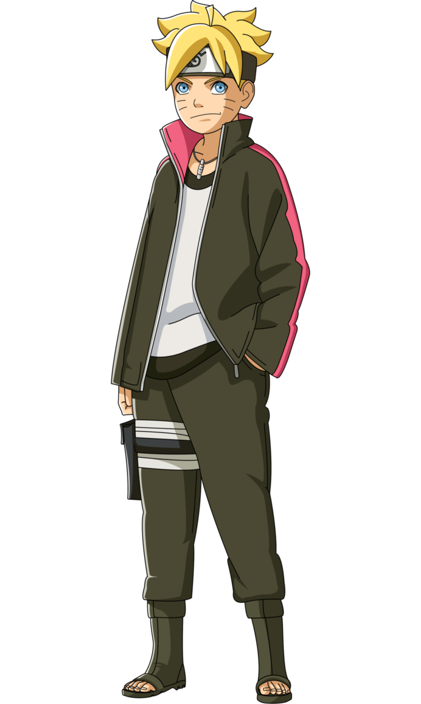
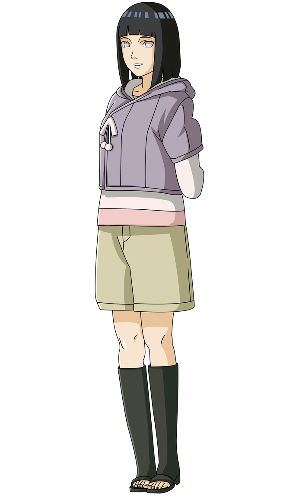
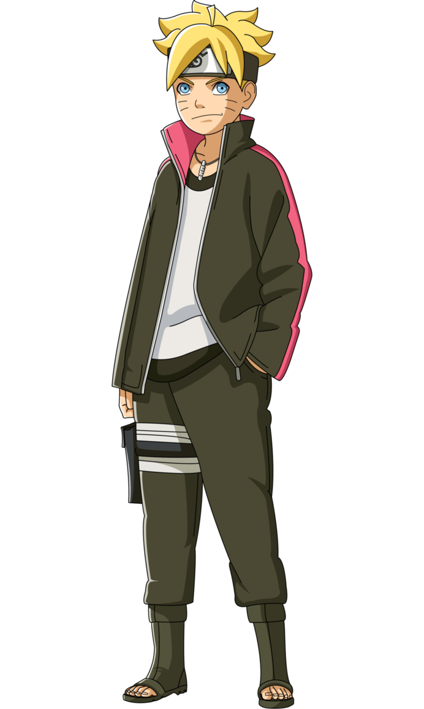
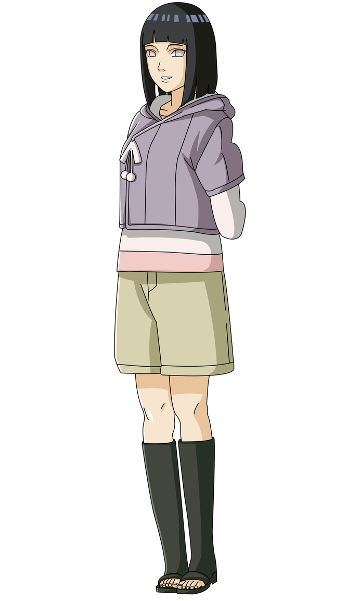
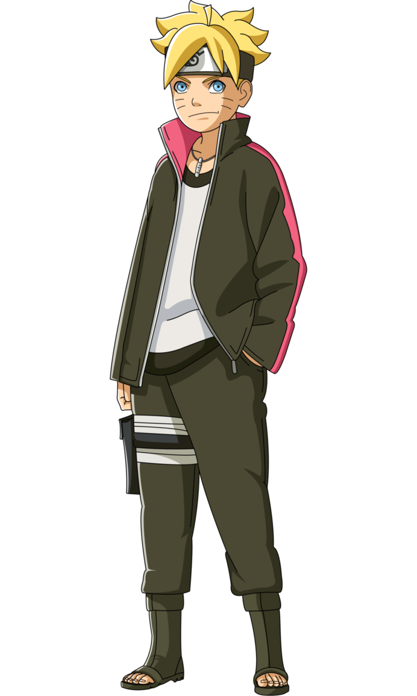
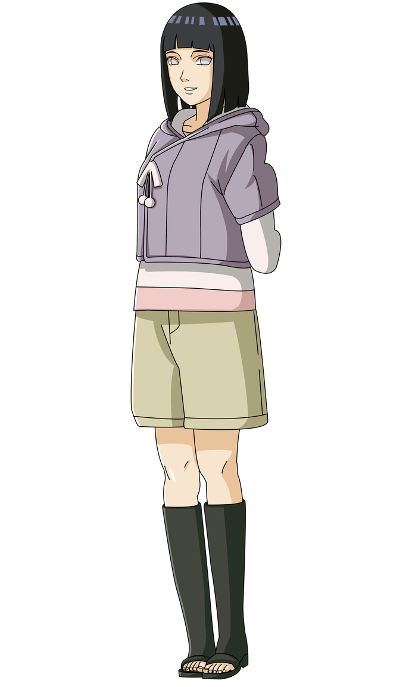

Village Hidden in the Leaves
is the hidden village of the Land of Fire. As the village of one of the Five Great Shinobi Countries,
Konohagakure has a Kage as its Leader known as the Hokage, of which there have been Seven in its History.


Naruto: Theme Song
Naruto: Sadness & Sorrow